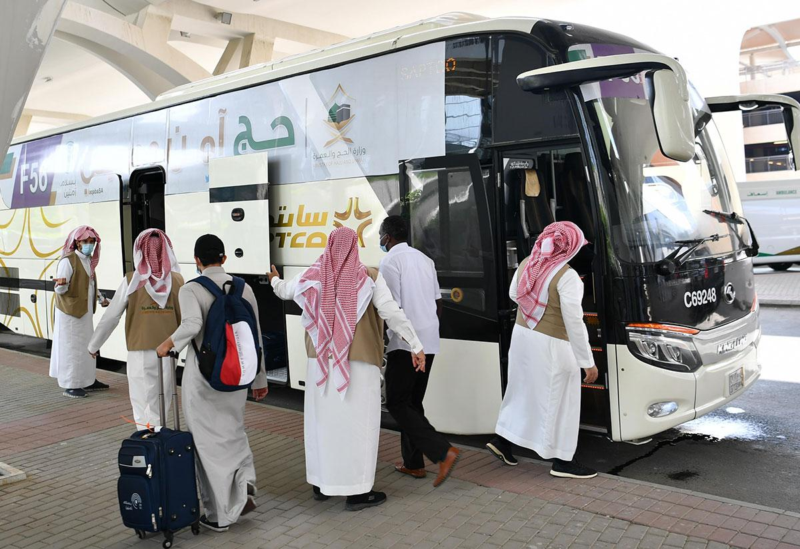

We specialize in providing seamless, culturally familiar Umrah experiences for travelers from across the globe.
From airport pickups to hotel stays, meals and ziyarat – everything is handled with care and respect.
We specialize in coordinating ground services in Makkah for Southeast Asian Umrah group operators. No fixed packages!— Just flexible, reliable support built around your group’s needs. Hotels. Meals. Transport. All locally managed, all handled with care.
On-time, comfortable transportation from Jeddah or Madinah airport with multilingual staff.
Pre-arranged stays in trusted 3-5 star hotels near the Haram with breakfast included.
Guided Ziyarat tours and city visits designed to enrich the Umrah journey.